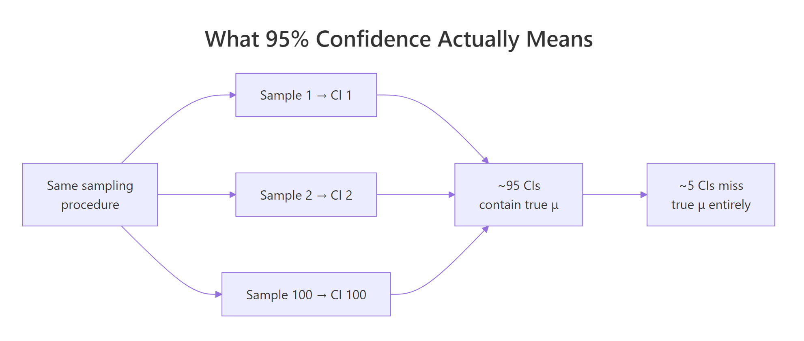
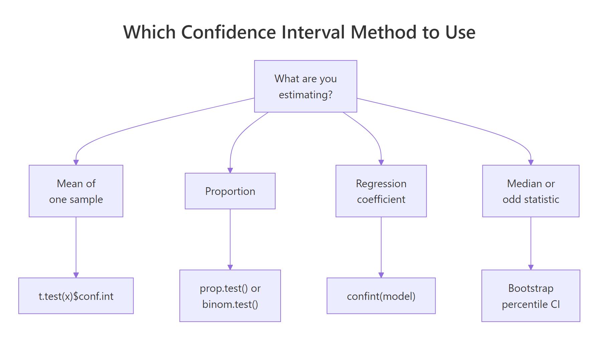
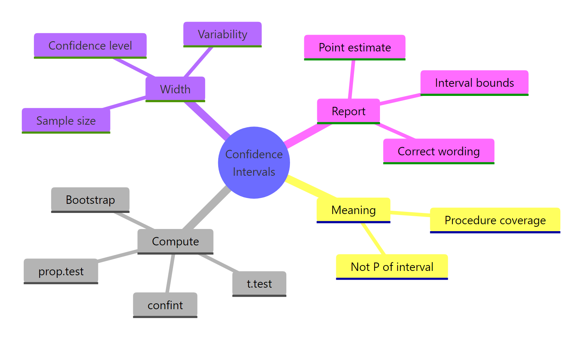

Confidence Intervals in R: The Definition Most Textbooks State Incorrectly
A 95% confidence interval does not mean "there's a 95% probability the parameter lies in this range" – that is a Bayesian credible interval. A frequentist CI from t.test() means something stricter: repeat the sampling procedure many times, and 95% of the constructed intervals will contain the true parameter.
What does a 95% confidence interval actually mean?
Most stats courses state the wrong definition, the intuitive one that is actually a credible interval. The cleanest way to see what "95%" really refers to is to simulate it, draw many samples, build a CI from each, and count how often the interval contains the true parameter. The simulation below draws 100 samples of size 30 from a Normal population with mean 50 and SD 10, builds a 95% CI from each, and measures coverage.
The coverage rate came out at 0.94, essentially the nominal 95%. If we had run 100,000 replicates instead of 100, the rate would settle almost exactly on 0.95. This is the precise statement the "95%" is making, across many samples, this procedure captures the true mean 95% of the time.
Let us visualize those 100 intervals so the property becomes concrete.
Each vertical line is one confidence interval. The dashed horizontal line is the true mean, 50. Roughly 5 of the 100 intervals (the red ones) miss it, and 95 cover it. You never know which five will miss ahead of time, that is the whole point.

Figure 1: The 95% refers to the procedure, across many repetitions, about 95% of constructed intervals cover the true parameter.
Try it: Modify the simulation to construct 99% confidence intervals instead of 95%, and confirm the empirical coverage rate lands near 0.99. Use conf.level = 0.99 inside t.test().
Click to reveal solution
Explanation: Widening confidence from 95% to 99% widens every interval, so more of them cover 50. Over many replicates the empirical rate lands near 0.99. In a small run of 100 you can see values like 0.98 or 1.00, expected sampling noise.
How do I compute a 95% CI for a mean in R?
The one-liner you will use 90% of the time is t.test(). Call it on a numeric vector and it returns, among other things, a 95% confidence interval for the population mean.
The relevant line is 95 percent confidence interval: 17.91768 22.26357. If you want the interval as a plain numeric vector to use downstream, extract it with $conf.int.
mpg_ci is now a length-2 numeric vector, element 1 is the lower bound, element 2 is the upper bound. The printed conf.level attribute confirms the default 95%.
conf.level argument. t.test(mtcars$mpg, conf.level = 0.99)$conf.int widens the interval to 99%. Going the other way, conf.level = 0.90 tightens it, at the cost of covering the true mean only 90% of the time across repeated sampling.Try it: Compute a 99% confidence interval for iris$Sepal.Length and store it in ex_sepal_ci.
Click to reveal solution
Explanation: t.test() plus $conf.int plus conf.level = 0.99 is the full recipe. The bounds 5.63 and 5.97 bracket the sample mean of 5.843 with extra width compared to the 95% interval.
How do I compute a confidence interval by hand?
Understanding how t.test() builds the interval under the hood makes it clearer why the interval has the width it does, and when you should not trust it. Every one-sample CI you will ever compute has the same three-part structure, a point estimate, a critical value, and a standard error.
$$\bar{x} \pm t_{n-1,\,1 - \alpha/2} \cdot \frac{s}{\sqrt{n}}$$
Where:
- $\bar{x}$ = the sample mean (the point estimate)
- $s$ = the sample standard deviation
- $n$ = the sample size
- $s / \sqrt{n}$ = the standard error of the mean
- $t_{n-1,\,1 - \alpha/2}$ = the critical value from the t-distribution with $n - 1$ degrees of freedom, for confidence level $1 - \alpha$
Let us reproduce the mtcars$mpg interval using only mean(), sd(), and qt().
The manual interval [17.92, 22.26] matches t.test(mtcars$mpg)$conf.int to full precision. qt(0.975, df = 31) returns the t-critical value 2.0395, leave half a percent in each tail of the t-distribution, and the two quantiles give you the 95% window.

Figure 2: Every confidence interval has the same shape, a point estimate plus or minus a margin, where the margin is a critical value times a standard error.
n >= 30 the t-distribution closely resembles the normal. Many older textbooks therefore use qnorm(0.975) = 1.96 in place of qt(0.975, df = n - 1). The difference is small for large samples but matters at n = 10 or 15 where qt() gives a notably larger critical value (2.26 instead of 1.96). Default to the t-version, it is always at least as correct.Try it: Compute a manual 95% CI for mtcars$hp and confirm it matches t.test(mtcars$hp)$conf.int.
Click to reveal solution
Explanation: The two bounds match to full precision because t.test() uses exactly this formula under the hood. No surprises, same math.
How does CI width change with sample size, variability, and confidence level?
A CI's width is not a mystery, it is driven by three knobs. Increase the sample size n and the interval shrinks as $1/\sqrt{n}$. Increase the variability s and it grows linearly. Increase the confidence level (say from 95% to 99%) and the critical value grows.
Let us demonstrate the sample-size effect directly. We draw samples from N(100, 15) at four different n values and record the width of the resulting 95% CI.
The first vector shows the widths at n = 10, 50, 250, 1000. Notice that when n goes from 10 to 1000 (100x increase), the width drops from about 10.7 to about 0.9 (roughly a 10x reduction), exactly the factor of $\sqrt{100} = 10$ the formula predicts. The second call confirms the 1/2 ratio between n = 100 and n = 400.
n is why "more data" is expensive, doubling precision at 95% confidence means quadrupling your sample size. Plan accordingly.Try it: Using the ci_width() function above, predict (then verify) the width ratio between n = 50 and n = 200.
Click to reveal solution
Explanation: Going from n = 50 to n = 200 is a 4x increase in sample size, and the CI width shrinks by roughly $\sqrt{4} = 2$. Small deviations from exactly 2 are pure sampling noise, on any single pair of samples.
How do I compute CIs for proportions, differences, and regression?
t.test() handles one-sample and two-sample means. For other common statistics, R ships a different function for each, all following the same pattern of "fit, then pull out a conf.int".
For a single proportion, use prop.test(). Suppose 35 of 100 users clicked your button and you want a 95% CI for the true click-through rate.
prop.test() uses the Wilson score method with continuity correction, which behaves far better than the naive "normal approximation" interval when n is small or the true proportion is near 0 or 1.
For a difference in two means, call t.test() with a formula or two vectors. The sleep dataset has extra hours of sleep for 10 patients on two different drugs.
The 95% CI for group 1 mean minus group 2 mean is roughly [-3.37, 0.21]. The interval straddles 0, which tells you right away that at the 5% significance level there is no evidence the two drugs differ, the data are consistent with "no difference".
For a regression coefficient, fit the model with lm() and call confint().
Each row is a 95% CI for one coefficient. The slope CI [-6.49, -4.20] says that, on average, a one-unit increase in wt (1,000 lbs) is associated with a drop of somewhere between 4.2 and 6.5 mpg.

Figure 3: Which CI method fits the problem you have in front of you, mean, proportion, difference, regression, or bootstrap.
prop.test() uses Wilson with continuity correction; binom.test() uses Clopper-Pearson exact. They give almost identical answers for moderate n and p, but can diverge noticeably when n is small (say under 30) or p is close to 0 or 1. For reporting in published work, the exact Clopper-Pearson interval from binom.test() is the safer default.Try it: Compute the 95% CI for the slope of the regression lm(Sepal.Length ~ Petal.Length, data = iris).
Click to reveal solution
Explanation: confint() returns a matrix with one row per coefficient. Subset by the row name "Petal.Length" to get just the slope. The bounds are very tight because iris has 150 rows and the relationship is nearly linear.
When should I use a bootstrap confidence interval?
The t-interval works great when the sample mean's distribution is approximately Normal, which, thanks to the Central Limit Theorem, is true for most moderate-sized samples from most distributions. But a few cases break the assumption, heavily skewed data with small n, or a statistic with no nice closed-form standard error (the median, a trimmed mean, a quantile, a correlation). In those cases, bootstrap the CI instead.
The idea is simple, resample the data with replacement many times, recompute the statistic on each resample, and use the empirical 2.5% and 97.5% quantiles of the recomputed statistics as the CI endpoints.
The percentile bootstrap 95% CI for the median mpg is roughly [17.3, 21.5]. No t-distribution, no standard error formula, just resampling.
Try it: Build a 90% percentile bootstrap CI for the mean of mtcars$hp.
Click to reveal solution
Explanation: Same recipe as the median bootstrap, just swap median() for mean() and the quantile probabilities to 0.05 / 0.95 for a 90% interval.
How do I report and interpret a confidence interval correctly?
Words matter. Here is a short phrasebook that covers almost every case you will write up.
| Correct | Incorrect |
|---|---|
| "We are 95% confident that the true mean is between 17.9 and 22.3." | "There is a 95% probability the true mean is between 17.9 and 22.3." |
| "If we repeated this study many times, 95% of the constructed intervals would contain the true mean." | "The true mean is in [17.9, 22.3] with 95% probability." |
| "The 95% CI for the difference is [-3.37, 0.21], which includes 0, so we cannot reject the null of no difference at alpha = 0.05." | "The 95% CI rules out a difference of 0." |
A confidence interval and a two-sided hypothesis test at the corresponding alpha level are mathematically dual, if the null value lies outside the (1 - alpha) CI, you reject the null at significance alpha. You can use this duality directly in R.
The 95% CI for the mean difference in the sleep trial contains 0, and the function correctly reports "Fail to reject H0". Compare with t.test(extra ~ group, data = sleep)$p.value, the p-value is 0.079, consistent with the CI message.
Try it: Given a 95% CI for a difference of [-3.4, 0.5], does it reject the null H0: difference = 0 at alpha = 0.05? Save your answer (TRUE or FALSE) in ex_ci_check.
Click to reveal solution
Explanation: Zero lies inside [-3.4, 0.5], so the interval does NOT rule out a difference of 0. Cannot reject H0 at alpha = 0.05, ex_ci_check is FALSE.
Practice Exercises
Exercise 1: 95% vs 99% CI widths on mtcars$qsec
Compute both a 95% and a 99% CI for mtcars$qsec and print the width of each. Store them in my_data, my_ci95, and my_ci99. By how many seconds does the 99% interval widen relative to the 95%?
Click to reveal solution
Explanation: The 99% CI is about 35% wider than the 95%, because qt(0.995, df = 31) is about 2.74 versus qt(0.975, df = 31) is about 2.04. Higher confidence always costs width.
Exercise 2: Empirical coverage on skewed data
Simulate 500 experiments, each drawing n = 50 observations from rexp(rate = 0.2) (an exponential distribution with mean 5). For each sample, construct a 90% CI for the mean using t.test(). Report the empirical coverage rate in my_exp_coverage.
Click to reveal solution
Explanation: Nominal coverage is 90%, empirical came in at 88.2%. The t-interval is slightly anti-conservative on skewed distributions at small to moderate n, one of the motivations for the bootstrap alternative.
Exercise 3: Bootstrap CI for the coefficient of variation
Bootstrap a 95% percentile CI for the coefficient of variation (standard deviation divided by mean) of mtcars$mpg. Use 5,000 resamples. Store the result in my_cv_boot.
Click to reveal solution
Explanation: The bootstrap percentile CI is [0.24, 0.36], the relative variability of mpg is between 24% and 36% of its mean. There is no closed-form standard error for sd(x) / mean(x), which is exactly when the bootstrap earns its keep.
Complete Example: A Small Drug-Trial Analysis
Let us tie everything together on the sleep dataset, a classic paired trial comparing the effect of two soporific drugs on 10 patients.
Four pieces of inference, each with a CI, each interpreted in the same frequentist language. The paired t.test() (which t.test(extra ~ group, data = sleep, paired = TRUE) gives) would in fact reject H0 here because within-subject pairing removes a big chunk of between-subject variance, but on the unpaired Welch analysis the simpler two-sample CI straddles zero, so the unpaired comparison is inconclusive at alpha = 0.05. That distinction is exactly the kind of thing CIs make transparent, the width and location of the interval tell you not just whether to reject but how close the data came to ruling out zero.
Summary
| Method | R function | Use when |
|---|---|---|
| One-sample t-interval | t.test(x)$conf.int |
Single mean, any n, moderately symmetric data |
| Two-sample / paired t-interval | t.test(x, y) or t.test(x ~ g) |
Mean difference between two groups |
| Wilson interval (Score) | prop.test(k, n)$conf.int |
Single proportion, moderate n and p |
| Clopper-Pearson exact | binom.test(k, n)$conf.int |
Proportion with small n or extreme p |
| Regression coefficient | confint(lm_fit) |
Slope / intercept from linear model |
| Percentile bootstrap | quantile(boot_stats, c(0.025, 0.975)) |
Median, trimmed mean, CV, or any custom statistic |
The four facts worth remembering long after this post:
- The 95% describes a procedure, not a computed interval.
- To halve a CI's width you need 4x the sample size.
- Use Wilson (
prop.test) for proportions unlessnis very small orpis near 0 or 1, then usebinom.test. - If the null value sits outside the (1 - alpha) CI, the corresponding two-sided test rejects at level alpha.
References
- Cumming, G. (2012). Understanding The New Statistics, Effect Sizes, Confidence Intervals, and Meta-Analysis. Routledge. Link
- Morey, R. D., Hoekstra, R., Rouder, J. N., Lee, M. D., and Wagenmakers, E. J. (2016). The Fallacy of Placing Confidence in Confidence Intervals. Psychonomic Bulletin and Review. Link
- Neyman, J. (1937). Outline of a Theory of Statistical Estimation Based on the Classical Theory of Probability. Philosophical Transactions of the Royal Society. Link
- R Core Team. t.test documentation. Link
- R Core Team. prop.test documentation. Link
- Hesterberg, T. C. (2015). What Teachers Should Know About the Bootstrap, Resampling in the Undergraduate Statistics Curriculum. The American Statistician. Link
- Agresti, A. and Coull, B. A. (1998). Approximate Is Better than Exact for Interval Estimation of Binomial Proportions. The American Statistician. Link
- CRAN
bootpackage documentation. Link
Continue Learning
- Central Limit Theorem in R, the result that makes most t-intervals valid for moderate samples.
- Sampling Distributions in R, where standard errors come from.
- Hypothesis Testing in R, the test-CI duality in full.